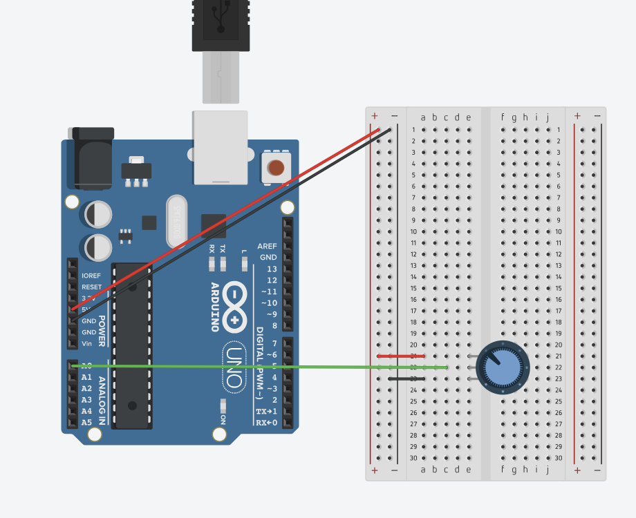
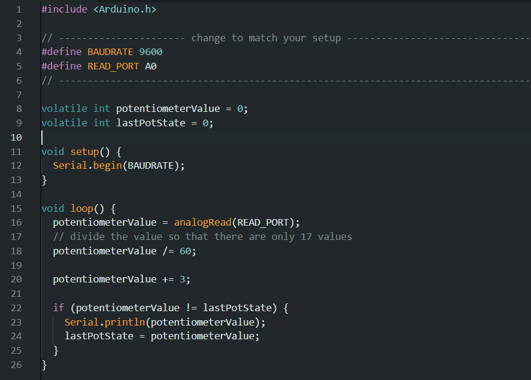

Arduino Project 3 - Art Meets Engineering
IGME 470
"Art Meets Engineering" represents the culmination of something I've been thinking about throughout this entire Arduino course: the similarities between Arduino circuits and Minecraft redstone. I have brought it up many times in past blog posts. Finally, I got to bring these two worlds together through the use of serial communication.
This project connects a physical potentiometer to Minecraft, where turning the dial in real life directly controls a scale of lamps in the game. It's a perfect demonstration of how digital and physical systems can interact, and honestly, it's pretty magical watching the Minecraft lamps respond to real-world input. Although the mod I used is currently limited, I am hoping in the future to be able to connect more complex Arduino projects to Minecraft, such as an array of lights on my desk that correspond to how full my Minecraft storage system is, or different colored lights representing which farms are enabled/disabled.


The parts used:
- 1x Arduino Uno R3
- 1x 250 kΩ Potentiometer

The setup is surprisingly simple hardware-wise - just an Arduino and a potentiometer. The real magic happens in the software integration. I used a Minecraft mod that allows serial port communication, opening up a connection to a specific baudrate to receive signals from the Arduino.
In Minecraft, I built a system using a special receiver block from the mod. This block reads the serial data and outputs it as a redstone signal through a comparator. The comparator converts the analog values from the potentiometer into redstone strength, which then controls how many lamps light up. Turn the potentiometer one way, and lamps turn on sequentially; turn it back, and they turn off.
I ran into some difficulties getting the serial communication to work initially, due to limited development of the mod and lack of documentation. However, after some trial and error and reaching out to the developer of the mod via Discord, I was able to establish a stable connection between the Arduino and Minecraft. It was incredibly rewarding to see the physical input directly affecting the virtual world in real-time. I am excited for further development of the mod, so I can do more communication from Minecraft back to the Arduino as well.
Demo